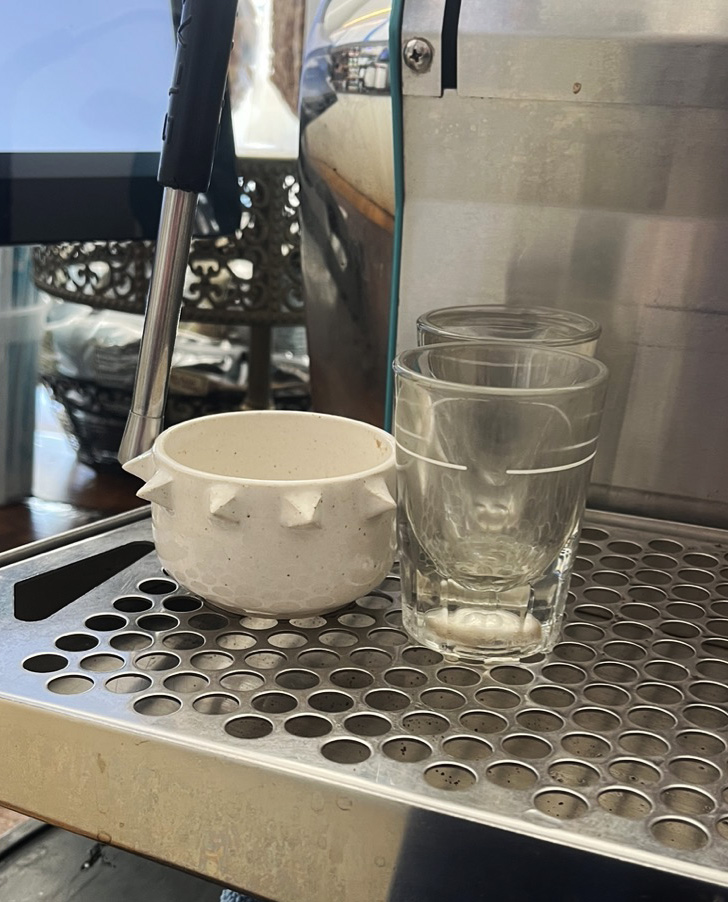
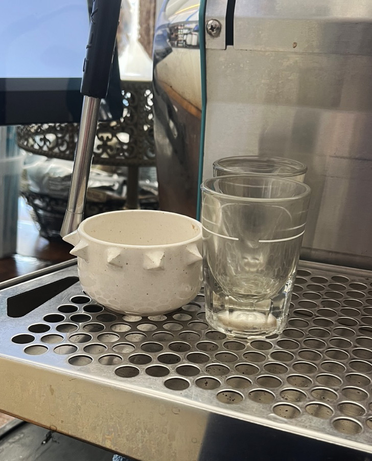
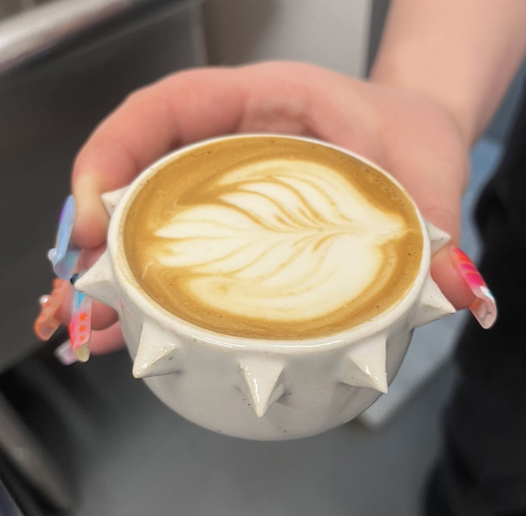
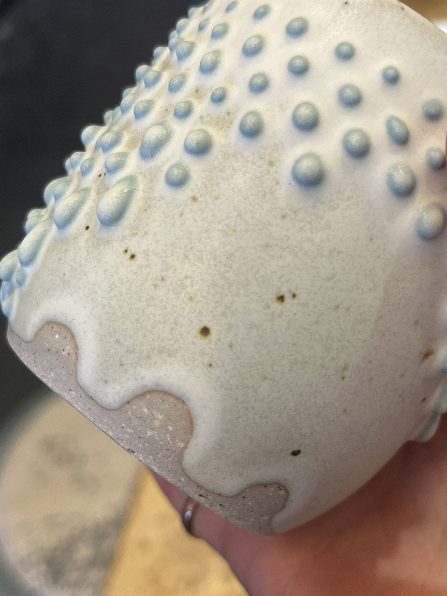
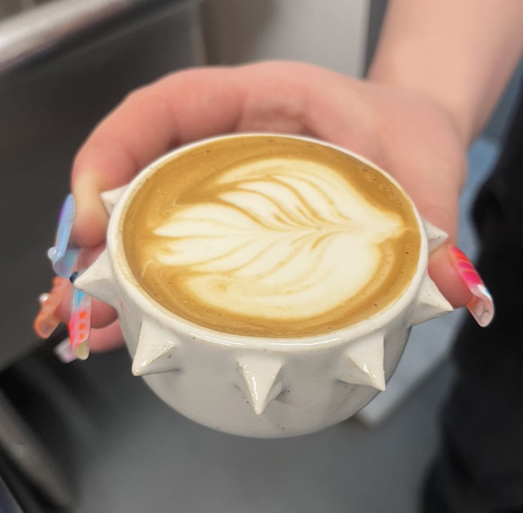
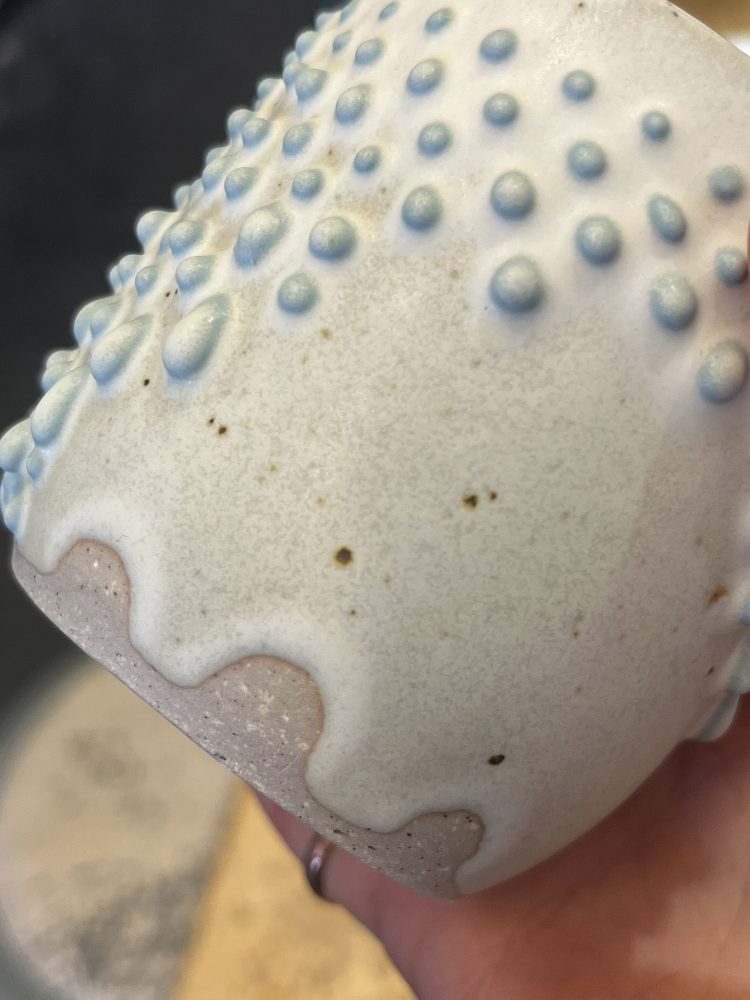
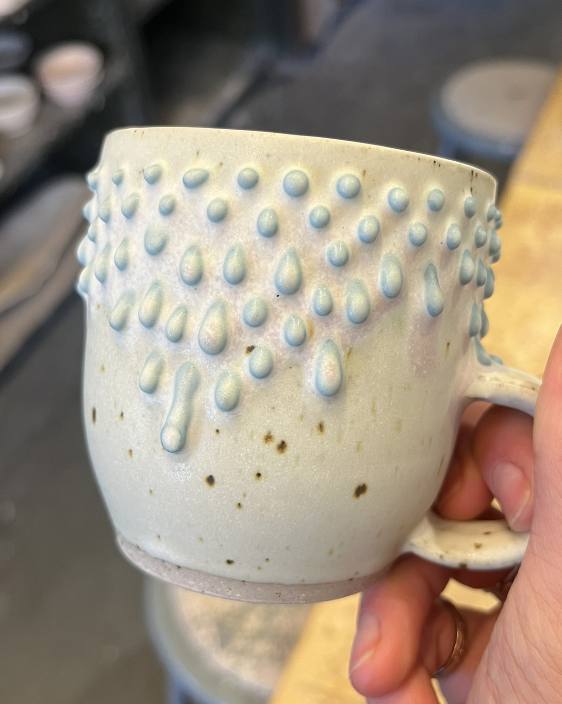
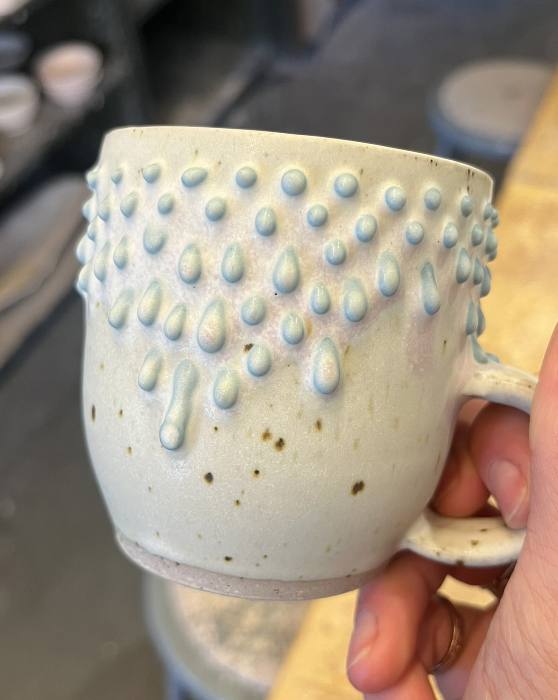

working with clay, turning a lump of earth into ceramic is the most rewarding way that i have found to bring my graphic motifs into the real world, the constraints and freedoms of working with clay allow the shapes to take on new definition. each medium brings new life to ideas. i took my first ever class on wheelthrowing in spring of 2024 and since then i have spent any moment of free time i could find to improve, strengthening my knowlege and skills of the medium and learning what makes good ceramics good, what makes interesting ceramics interesting, and what task allows me to get the most covered in mud that is socially acceptable.


this was my cheese themed exhibit! i spent my first semester of ceramics making many cheeses, from 1 inch tall to a whole foot tall! at the end of the semester i had all my friends come to my chexibit where we ate cheese and crackers and cheesecake out of bowls that i made on the table i made in the woodshop that semester! so fun!


 

 



 
